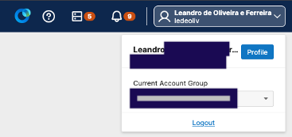

Creating Page Load Test and Alert rule in ThousandEyes
Before starting, you'll need data in ThousandEyes.
If you still do not have a trial account, do so. Thousand Eyes Trial
Follow these steps to create a test and an alert rule using shell or curl commands. Using the UI to do this is not coverd here but feel free to do it if you find it quicker/easier.
Step 0 - Create your API Token and get your account group.
Top right -> yourname -> Profile

Take note of your Current Account Group
In the User API Tokens click Create
Save the API_TOKEN
Now, you can run this shell script shell script to do everything or go step by step like described below.
Step 1 - Get your accountId using this command
curl -X GET "https://api.thousandeyes.com/v7/account-groups" \
-H "Authorization: Bearer <API_TOKEN>" \
-H "Content-Type: application/json" \
| jq -r '
["accountGroupName","aid","isCurrentAccountGroup"],
(.accountGroups[] | [.accountGroupName, .aid, .isCurrentAccountGroup] )
| @csv
' | grep <your account group first 5 letters>
Sample return.
"yyy","xxxx",true
The accountId is the second column. Save it to be used in the next step
Step 2 - create a new page load test using your account id
curl -X POST "https://api.thousandeyes.com/v7/tests/page-load?aid=<accountId>" \
-H "Authorization: Bearer <API_TOKEN>" \
-H "Content-Type: application/json" \
-d '{
"testName": "online-boutique-us-ledeoliv",
"url": "https://online-boutique-us.splunko11y.com",
"interval": 300,
"agents": [
{ "agentId": "4495" }
],
"pageLoadTimeLimit": 10,
"pageLoadTargetTime": 8,
"httpVersion": 2,
"authType": "NONE",
"alertsEnabled": true,
"enabled": true
}'
Sample return.
{"interval":300,"testId":"xxxx","bgpMeasurements":true,"usePublicBgp":true,"httpInterval":300,"liveShare":false,"testName":"online-boutique-us-ledeoliv",...
Get the testId to be used in the next step
Step 3 - Create a new Alert rule associated with the Page Load Test
curl -X POST "https://api.thousandeyes.com/v7/alerts/rules?aid=<accountId>" \
-H "Content-Type: application/json" \
-H "Authorization: Bearer <API_TOKEN>" \
-d '{
"ruleName": "ledeoliv-page-load-alert-online-boutique",
"description": "Alert if page load total time exceeds 800 ms",
"alertType": "page-load",
"alertGroupType": "cloud-enterprise",
"severity": "major",
"expression": "((onLoadTime >= 800 ms))",
"minimumSources": 1,
"roundsViolatingOutOf": 3,
"roundsViolatingRequired": 3,
"notifyOnClear": true,
"testIds": ["<testId>"]
}'
Sample return
{"ruleName":"ledeoliv-page-load-alert-online-boutique","expression":"((onLoadTime >= 800 ms))",